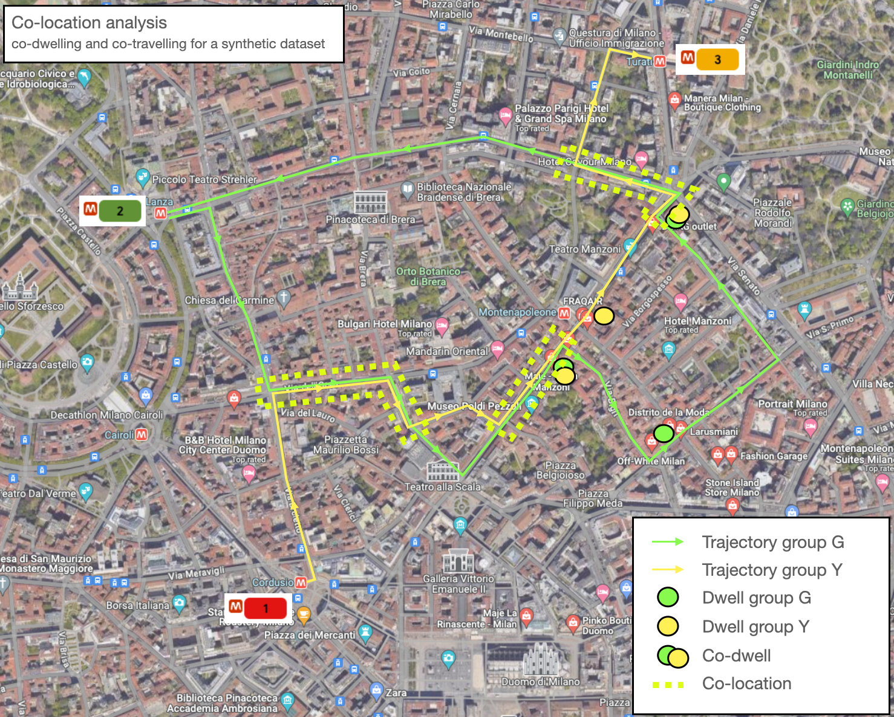
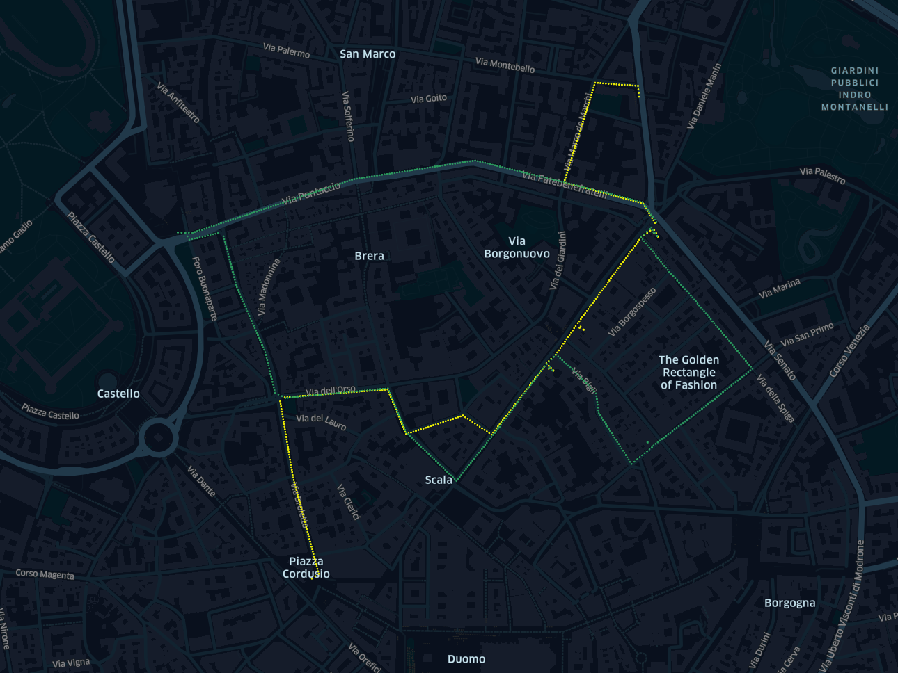
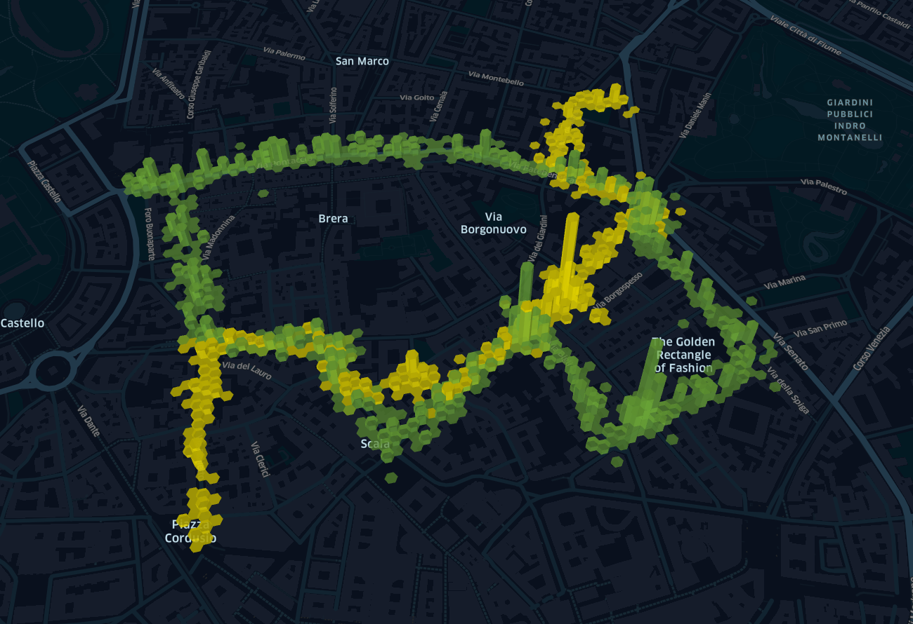
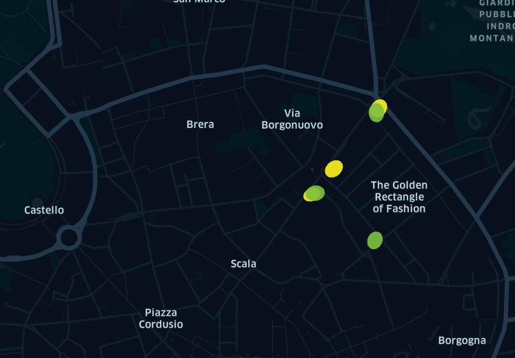
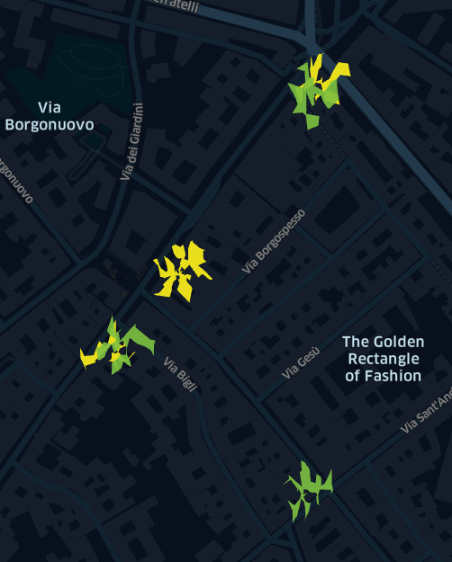
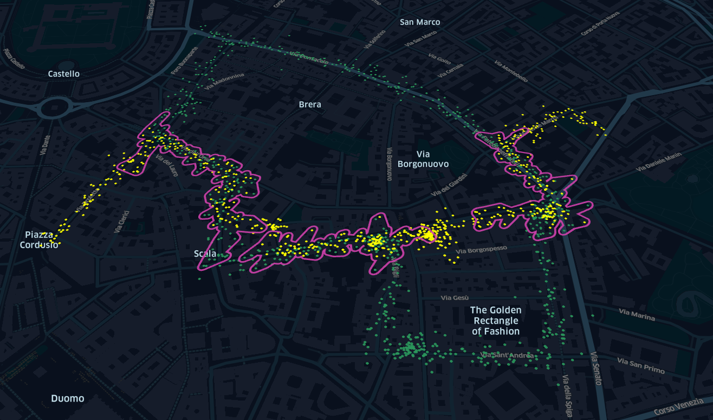
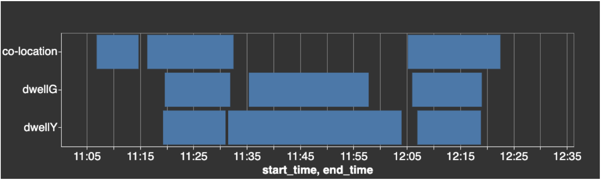

Ownership Note: blog post originally published on the 7th of February 2024 for generalsystem.com. As the General System startup adventure is coming to an end, and the website may no longer be maintained, I keep it live on my personal blog. Soon additional code embeddings that I could not add on the original version, and a more in depth-classification will be added.
Special thanks to the generalsystem.com team members, in particular Lisa Hutt and Nysa Wilson for the revision and support. Typos and mistakes are on the author.
Intro
What does a day in the Quadrilatero d’Oro, Milan’s fashion district look like and how can retailers understand and respond to the complex footfall patterns?
In this blog post, we use General System technology to analyse paths, dwells and co-location patterns of shoppers that were sharing their location through mobility data.
The analysis is particularly relevant for retailers, media buyers, transport and city planners that are working with dynamic mobility data and are looking to extract similar insights or automate their reporting.
Dataset

The use case consists of two groups of people meeting in Milan for an afternoon of shopping.
- The first group, which we called group G (Green) appears on the map from Lanza tube station, line 2.
- The second group, Y (Yelllow) arrives shortly afterwards at the Cordusio tube station Cordusio, line 1.
After a short walk from the tube station, both groups merge on the Via DelL’Orso and head East together before splitting around Teatro La Scala. They meet again on Via Manzoni for another tandem walk to the first shop.
After the first shop, they split again. Group G walks southwards to visit a couple of shops, while group Y continues along via Manzoni to their next shop. Group G and Y regather for a visit to the last shop and finally head towards the Metro. Group G returns to Lanza tube station, while group Y heads for nearby Turati tube station on Line 3.

This dataset is synthetic and built with the noise model presented in the previous blog post.

So far, the data creates visually appealing graphs that show the routes of each group.
Finding dwells
To mine significant information from the data, such as what shops were visited throughout the afternoon, we calculate where each group has dwelled using the dwell calculator algorithm.
For this analysis, we define a dwell as a location of radius 15 metres, where a device (or a group of devices) has remained for more than 10 minutes. The algorithm also takes the outliers into account and removes them from the dwell detection.
The algorithm returns a vector of labels, a vector of exceptions, and a table of geometries and time intervals where the dwells have occurred.
On the map, we can show the dwell geometries as ellipses after performing a Principle Component Analysis (PCA) on the pings that have been labelled as a dwell, or as a convex hull or a concave hull.

Given the number of pings in this example, the ellipses representation provides a reasonable representation of the dwell’s geometry, though there are other options. Below, we also show a visualisation of the concave hull, whose outline helps us understand how the pings are spread out around the centre of the visit.

Comparing the algorithm response with the ground truth we can see that all the dwells are correctly identified. We can see where both groups have dwelled as well where each group dwelled individually.
Finding co-locations
Intersecting the geometries and time intervals of the dwells for the two groups provides the co-dwells, though this would not be informative enough if we also wanted to investigate where the two groups have been co-travelling.
These more generic features, called co-locations, are the locations and time intervals where the devices have met, both in a static setting and in a dynamic setting.
As it was for the visits, the co-locations are given as geometries and time intervals.

We can compare the co-locations and individual dwells to see that during the first co-location (first row), the two groups did not stop in any shop; they were simply walking together.

For the second co-location (second block of the first row), we can see that 10 minutes are spent together, without moving, in the same location.
Afterwards, group Y visits another shop for about 30 minutes, while group G dwells for 25 minutes. We can see they are not in the same location, as the co-location algorithm has not detected joint activities.
Finally, for the last co-location, both groups are static for about 10 minutes.
What’s next
In this blog post we used a toy example to show what can be achieved with mobility data and a couple of algorithms. The algorithms are robust enough to cope with the noise in mobility data. Moreover, a larger-scale dataset would account for, and further reduce the data imprecision.At scale we can investigate the behaviour of shoppers across a city centre to learn:
- the most common entry and exit points for the shopping center
- most common routes
- sequences of shops attended by crowds
- the times, days and seasons when these shops are most popular
- the volume of pedestrians on roads, in shops and other large buildings
- changes in patterns due to macro influences such as the weather or public events
Use Cases
Retailers, advertisers, transport and city planners can use these methods to extract insights and make informed business decisions and reports can be automated to create analytical dashboards that highlight trends over time.
Analysing the multiple dimensions of movement over time involves working with very large, dynamic mobility data sets.